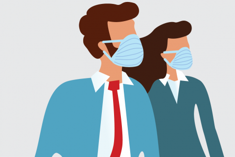

Recomendaciones
Para evitar la propagacion:
- Lávese las manos con frecuencia. Use agua y jabón o un desinfectante de manos a base de alcohol.
- Manténgase a una distancia segura de cualquier persona que tosa o estornude.
- Cuando tosa o estornude, cúbrase la nariz y la boca con el codo flexionado o con un pañuelo.
- Quédese en casa si se siente mal.
- Si tiene fiebre, tos y dificultad para respirar, solicite atención médica. Llame con antelación.
- Siga las instrucciones de su organismo sanitario local.
Para más información de click
aquí
